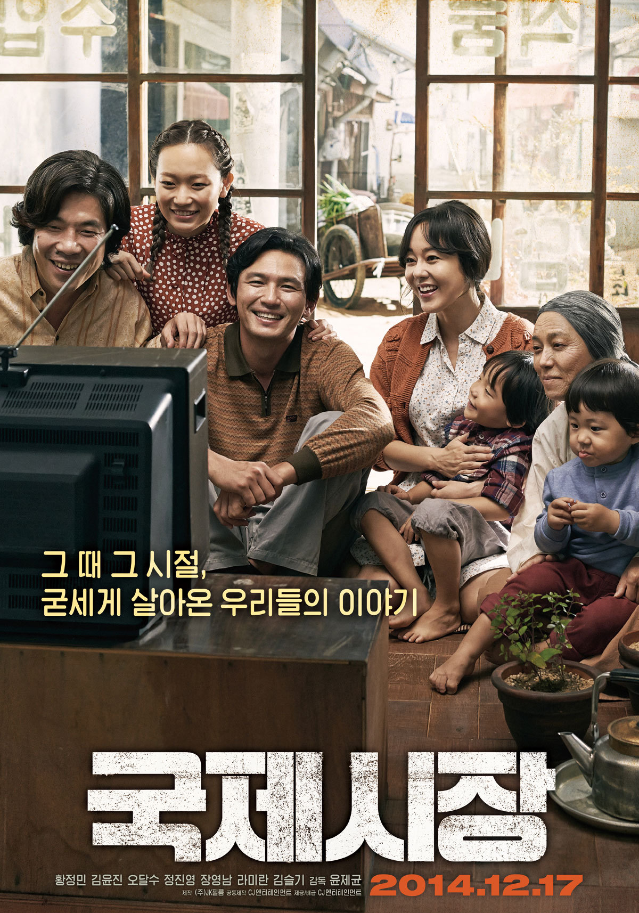

국제시장
주요정보
1950년 한국전쟁을 지나 부산으로 피란 온 ‘덕수’(황정민 분)의 다섯 식구, 전쟁 통에 헤어진 아버지를 대신해야 했던 ‘덕수’는 고모가 운영하는 부산 국제시장의 수입 잡화점 ‘꽃분이네’서 일하며 가족의 생계를 꾸려 나간다. 모두가 어려웠던 그때 그 시절, 남동생의 대학교 입학 등록금을 벌기 위해 이역만리 독일에 광부로 떠난 ‘덕수’는 그곳에서 첫사랑이자 평생의 동반자 ‘영자’(김윤진 분)를 만난다. 그는 가족의 삶의 터전이 되어버린 ‘꽃분이네’ 가게를 지키기 위해 ‘선장’이 되고 싶었던 오랜 꿈을 접고 다시 한번 전쟁이 한창이던 베트남으로 건너가 기술 근로자로 일하게 되는데… 가족을 위해 굳세게 살아온 그때 그 시절, 가장 평범한 아버지의 가장 위대한 이야기가 시작된다!